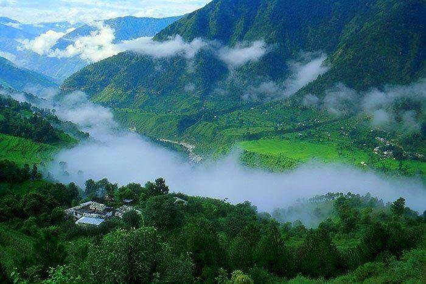
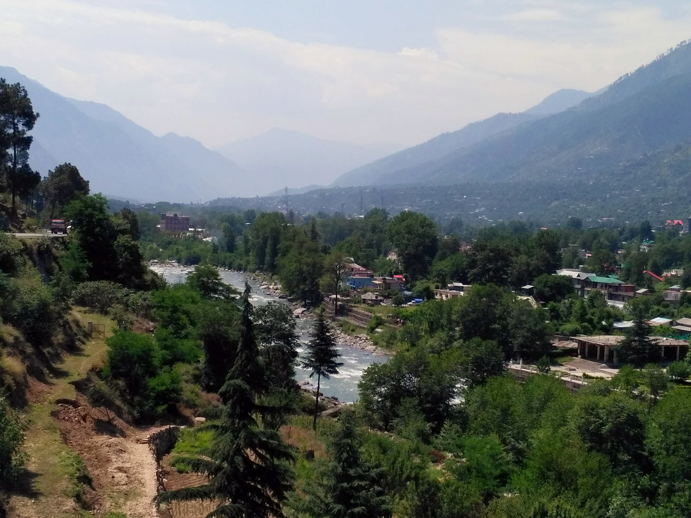
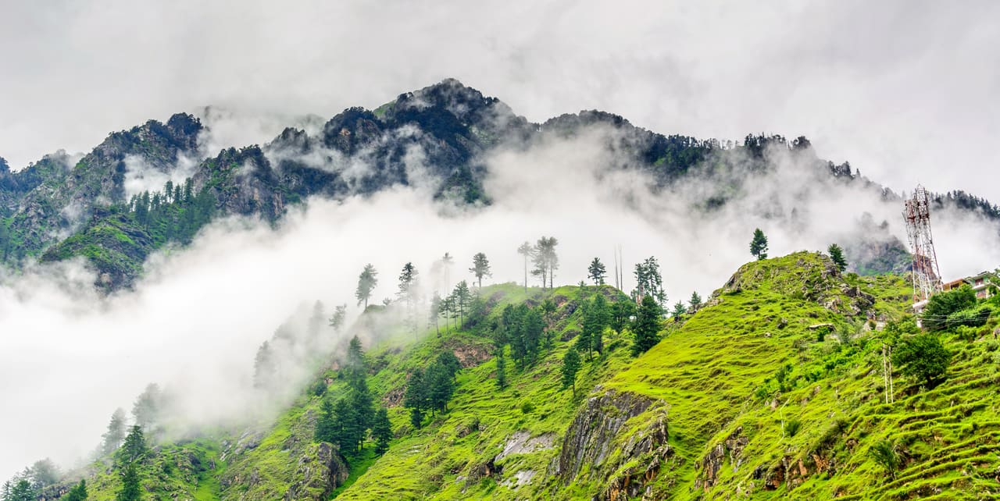
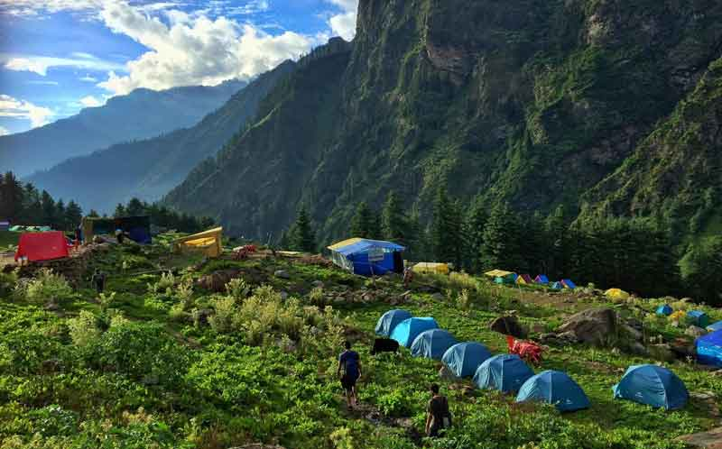

1 / 3

Caption one
2 / 3

Caption Two
3 / 3

Caption Three
3 / 3

Caption four
3 / 3

Caption five
Monsoon is not considered an ideal time to visit the place. There are heavy chances of landslides and you will find definite news on road blockages. The Kullu district receives moderate to heavy rainfall but a visit to this place during this time of the year will be a great feast for a person who loves to enjoy the natural beauty of the region along with the waterfalls, greenery and the romantic mist making the place livelier. It is not advisable to visit Kasol in July and the same goes for weather conditions at Kasol in August. Though Kasol is very cheap, Monsoon is considered as an off-season and will make your tour to the hill station more cheaper. Also, late September is the time when the people in Parvati Valley harvest their major crop for livelihood, ‘cannabis’. The parvati river side view was a beauty. You can dip your feet in the chilled water, take lot of videos in the forest around the river and capture the happy moments with friends. We also walked around the market but it was all quiet and boring. Had lunch at Bhoj cafe, the burnt noodles and pasta were just perfect to add up to my kasol experience. I will say Kasol is just not the place for you if you are a traveler. If all you want is weed and the firangi crowd, go ahead and you will spend a good time.